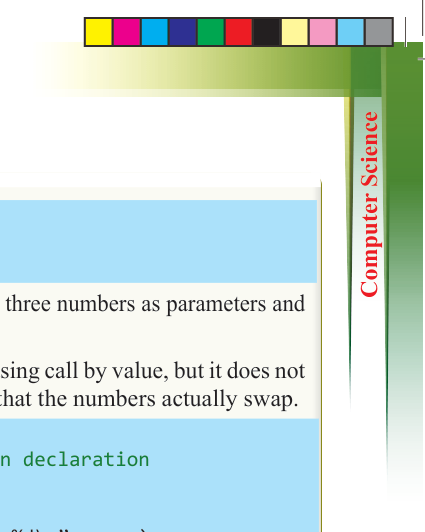
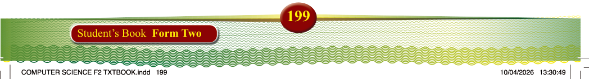
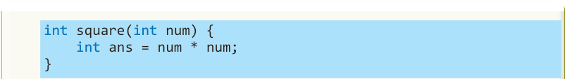
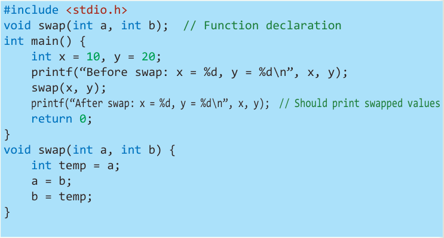
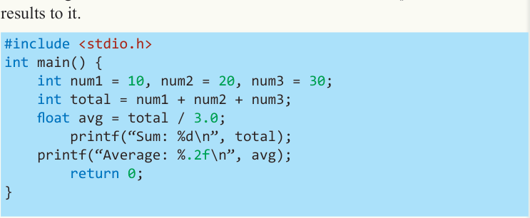

199
Student’s Book Form Two

int square(int num) { int ans = num * num;
}
2. Write a C function called findMax() that takes three numbers as parameters and
returns the largest one.
3. The following function swaps two numbers using call by value, but it does not work. Modify it to use call-by-reference so that the numbers actually swap.

#include <stdio.h> void swap(int a, int b); // Function declaration int main() { int x = 10, y = 20; printf(“Before swap: x = %d, y = %d\n”, x, y); swap(x, y);
printf(“After swap: x = %d, y = %d\n”, x, y); // Should print swapped values
return 0;
} void swap(int a, int b) { int temp = a; a = b; b = temp;
}
4. The following program calculates the sum and average of three numbers, but all the logic is currently inside the main() function. Modify the program to use two separate functions: one to calculate the sum and another to compute the average. These functions should be called from main() and return their results to it.

#include <stdio.h> int main() { int num1 = 10, num2 = 20, num3 = 30; int total = num1 + num2 + num3; float avg = total / 3.0; printf(“Sum: %d\n”, total); printf(“Average: %.2f\n”, avg); return 0;
}
5. Write a C function called printMessage() that prints the message “Welcome to C programming!” when called.